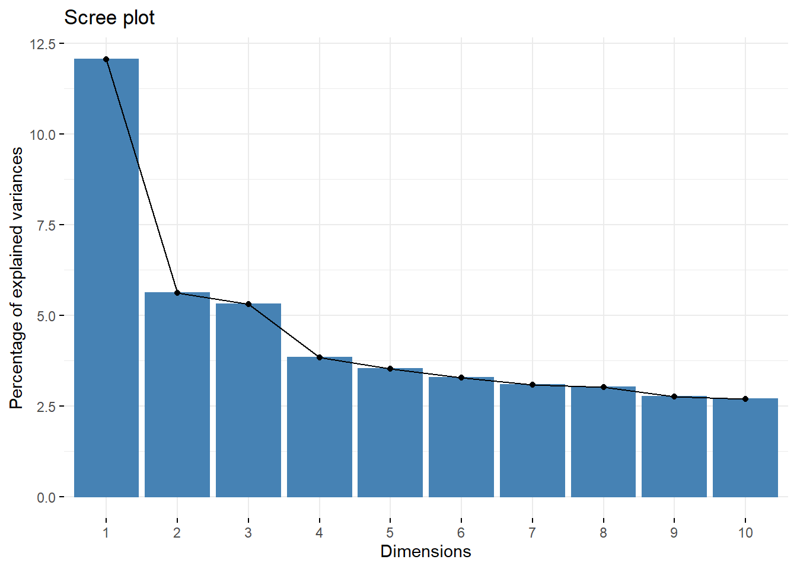
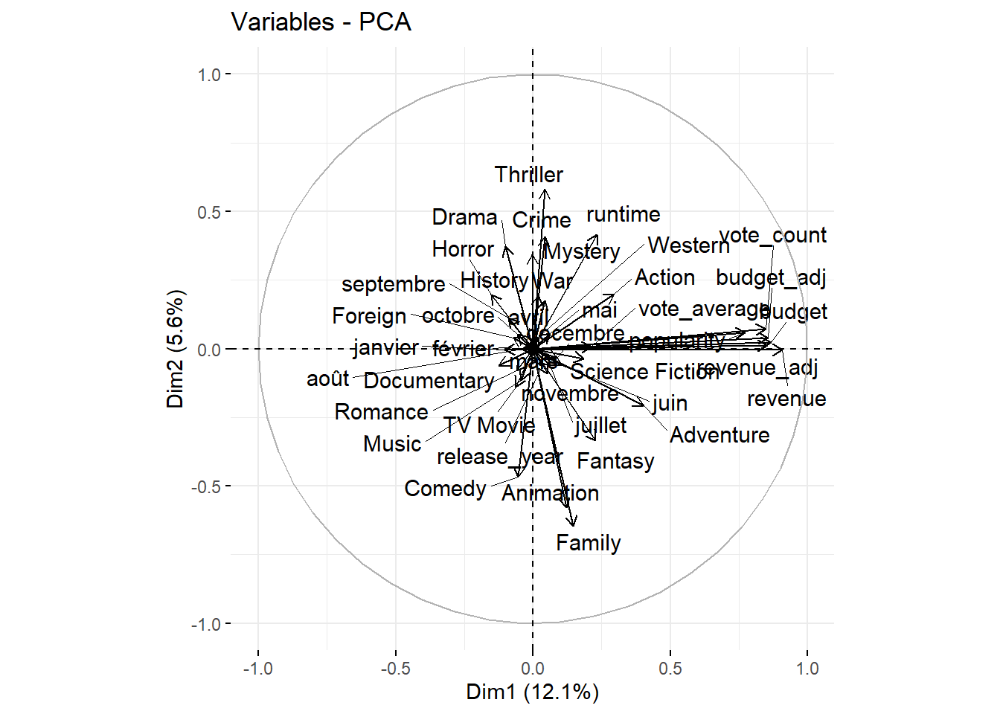
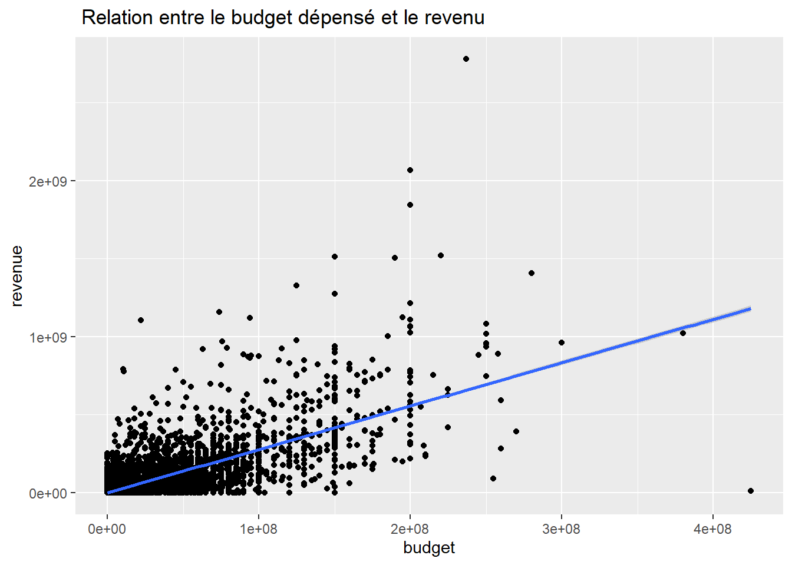
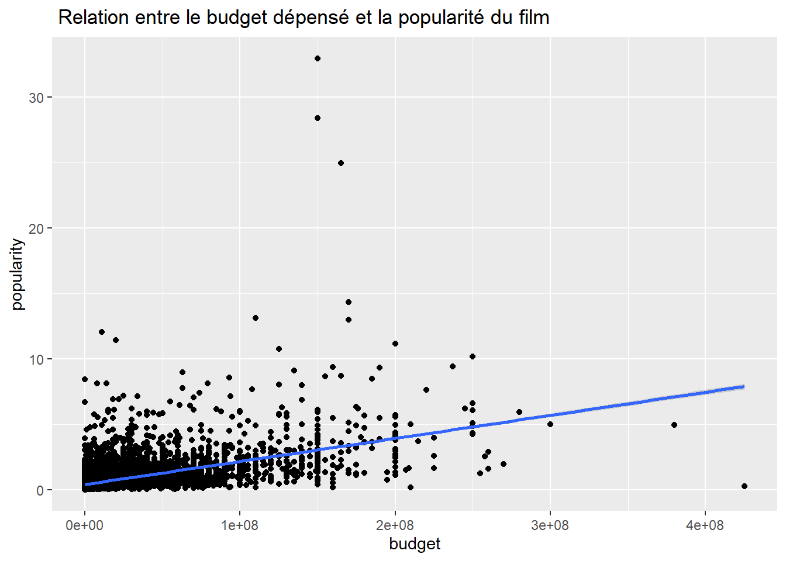
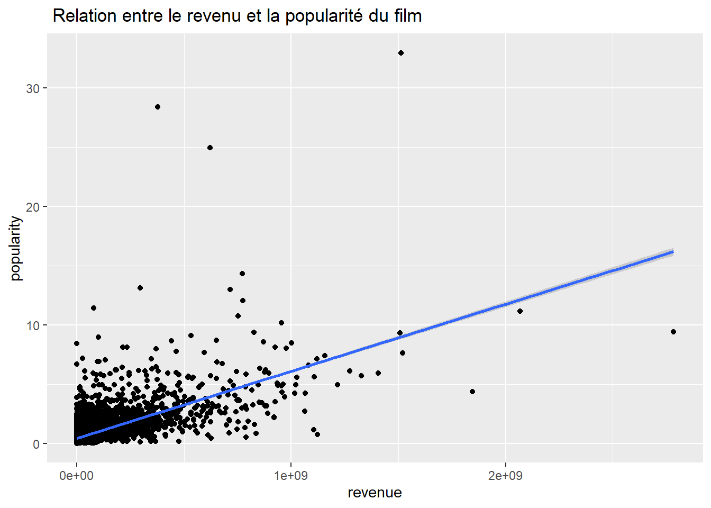
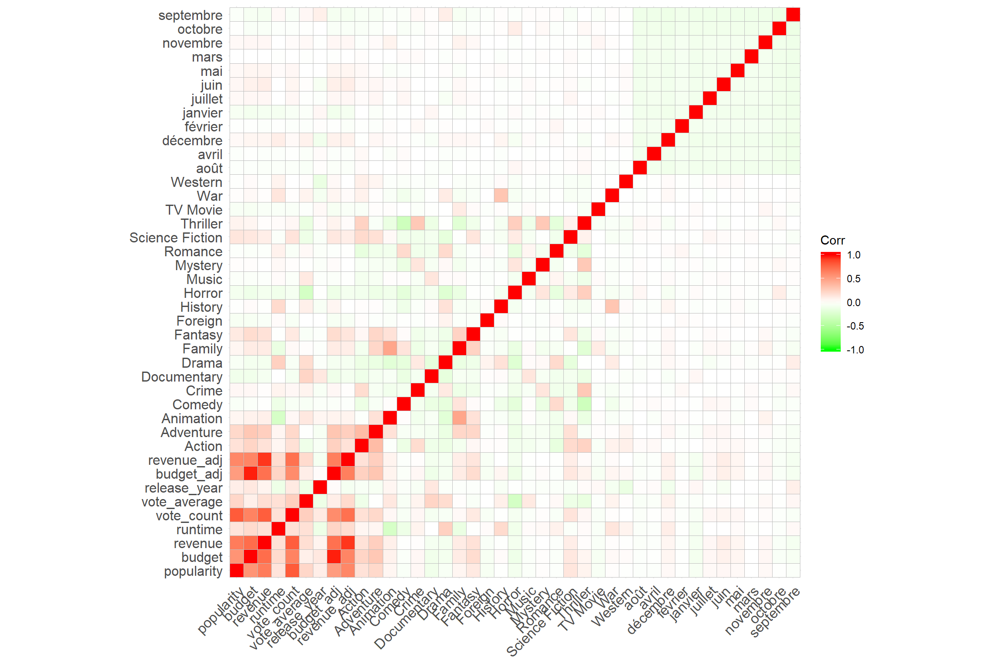
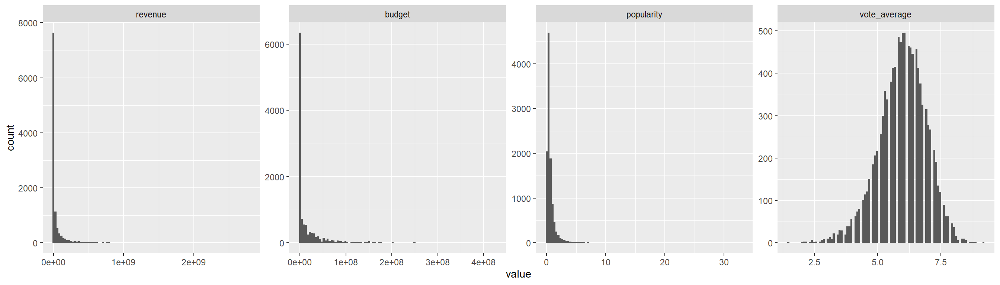
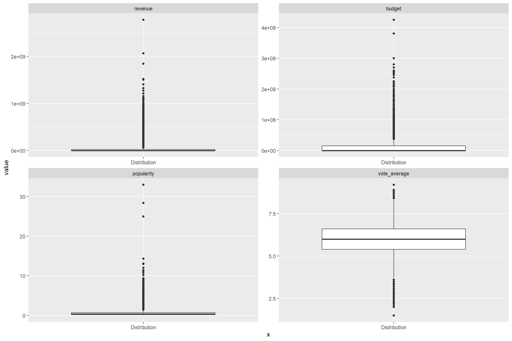
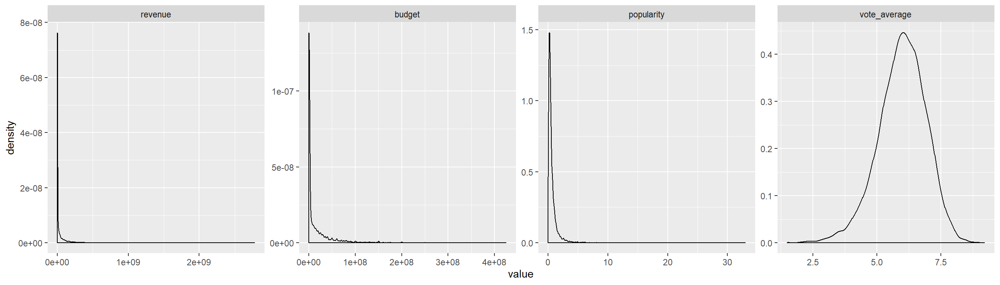
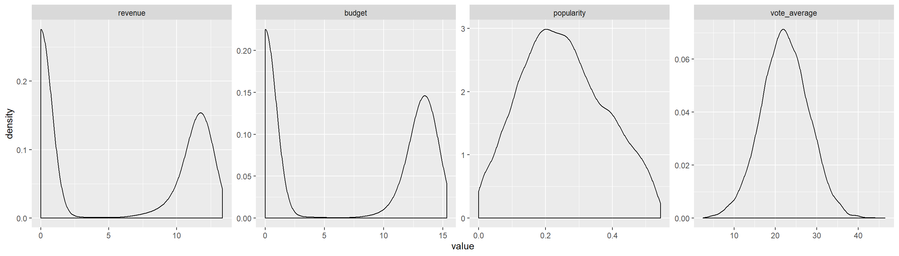

5 Visualisation des données


5.1 Visualisation des composantes principales
5.2 Nuage de points
ready_df %>%
ggplot(aes(x = budget, y = revenue)) +
geom_point() + geom_smooth(method = "lm") +
labs(title = " Relation entre le budget dépensé et le revenu")
Lien entre la popularité et le budget
ready_df %>%
ggplot(aes(x = budget, y = popularity)) +
geom_point() + geom_smooth(method = "lm") +
labs(title = " Relation entre le budget dépensé et la popularité du film")
Lien entre la popularité et le revenu du film
ready_df %>%
ggplot(aes(x = revenue, y = popularity)) +
geom_point() + geom_smooth(method = "lm") +
labs(title = " Relation entre le revenu et la popularité du film")
5.3 Correlations
ggcorrplot::ggcorrplot(
cor(ready_df), colors = c("green", "white", "red",
hc.order = TRUE, type = "lower")
)
5.4 Densité des colonnes et normalisations
ready_df %>%
select(revenue, budget, popularity, vote_average) %>%
mutate(id = "corr") %>%
reshape2::melt(id.var = "id") %>%
ggplot(aes(x = value)) + geom_histogram( bins = 100) +
facet_wrap(~variable, ncol = 4, scale = "free")
A l’exception de la colonne vote_average, toutes les autres colonnes sont loin de suivre une distribution normale.
Il y a évidemment dans ces colonnes des valeurs atypiques (outliers). Représentons à l’aide des boîtes à moustaches ces colonnes
ready_df %>%
select(revenue, budget, popularity, vote_average) %>%
mutate(id = "corr") %>%
reshape2::melt(id.var = "id") %>%
ggplot(aes(y = value, x = "Distribution")) + geom_boxplot() +
facet_wrap(~variable, ncol = 2, scale = "free")
L’intuition que nous avions eu sur les valeurs atypiques s’avèrent à la vue de ces colonnes. Mettons dans un tableau l’ensemble des indicateurs de moments pour chacune de ces colonnes afin d’observer là il y a anomalie dans la distribution des données.
## [1] "Indicateurs de tendance centrale du revenu"## 0% 25% 50% 75% 100%
## 0 0 0 24000000 2781505847## [1] "Indicateurs de tendance centrale du budget"## 0% 25% 50% 75% 100%
## 0.00e+00 0.00e+00 0.00e+00 1.50e+07 4.25e+08Il semble bien qu’il y ait un problème avec les données car le minimum des revenus est 0, cela ne peut se faire
ready_df %>%
select(revenue, budget, popularity, vote_average) %>%
mutate(id = "corr") %>%
reshape2::melt(id.var = "id") %>%
ggplot(aes(x = value)) + geom_density() +
facet_wrap(~variable, ncol = 4, scale = "free")
Il serait intéressant de normaliser chacune de ces colonnes pour les rapprocher d’une distribution normale. Si nous essayons d’estimer le revenu du film à partir de ces colonnes numériques avec une régression linéaire OLS, nous risquons de construire un modèle biaisé avec cette configuration.
Il existe une transformation qui porte le nom de ces auteurs Yeo et Johnson qui consiste à rapprocher vers une distribution normale des colonnes qui ne le sont pas. Nous allons essayer cette trasnformation pour voir si nous pouvons améliorer la qualité d’un modèle.
(blueprint <- recipe(revenue~., data = ready_df) %>%
step_YeoJohnson(all_predictors(), budget, vote_average, popularity, revenue))## Data Recipe
##
## Inputs:
##
## role #variables
## outcome 1
## predictor 40
##
## Operations:
##
## Yeo-Johnson transformation on all_predictors(), ...new_df %>%
select(revenue, budget, popularity, vote_average) %>%
mutate(id = "corr") %>%
reshape2::melt(id.var = "id") %>%
ggplot(aes(x = value)) + geom_density() +
facet_wrap(~variable, ncol = 4, scale = "free")